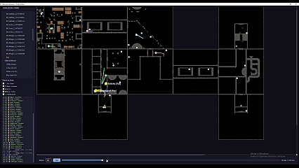

Ferramenta de Telemetria e Depuração Visual de Runs
Aplicação visual desenvolvida em Python para reconstrução procedural de masmorras, rastreamento de trajeto dos jogadores e sincronização temporal de eventos de combate a partir de logs de partida.
Fluxo de Funcionalidades & Lógica da Arquitetura
1. Extração de Dados & Métricas de Partida
O sistema processa automaticamente os arquivos de log gerados pela partida, identificando a Seed, nível de Dificuldade, Cota (Quota) e o layout procedural de salas. Além disso, mapeia o valor total de itens gerados no mapa, a distribuição das salas e a quantidade de AIs presentes na partida.
2. Visualização de Trajeto & Heatmaps em Tempo Real
Converte os dados de posição dos jogadores em uma interface Top-Down. Desenha a rota percorrida por cada jogador durante a partida, diferenciando o deslocamento normal (linhas contínuas) de eventos de teletransporte (linhas pontilhadas), permitindo identificar gargalos de navegação, zonas mortas do mapa e falhas de geometria.

3. Feed de Combate & Navegação Temporal Sincronizada
O painel exibe um histórico de eventos de combate (DAMAGE, HIT, HURT) com dados de dano, vida restante e causador do ataque. Ao clicar em qualquer linha do log de dano, a barra de tempo da ferramenta ajusta automaticamente o segundo exato da ocorrência, atualizando a posição dos jogadores e inimigos no minimapa para contextualizar cada morte ou emboscada.
4. Leitura do Layout Procedural & Conectividade de Salas
Sincronizado com a especificação do sistema de minimapa do jogo, o debugger reconstrói o mapa ajustando dinamicamente a rotação e o encaixe de salas (KeyRooms) e adereços de acordo com a adjacência das conexões procedurais, garantindo precisão total em relação ao que o jogador vivenciou no jogo.
Destaques de Produção & Impacto no Projeto
- Aceleração do Balanceamento de Gameplay: Permite que game designers entendam o contexto de mortes e picos de dificuldade sem a necessidade de reproduzir bugs manualmente ou assistir a horas de gravações de partida.
- Otimização de Level Design & Rota: Identifica rapidamente se o algoritmo procedural está gerando salas desconectadas, rotas frustrantes ou se salas valiosas contendo itens de alto valor estão sendo ignoradas pelos jogadores.
- Ajuste Fino de Economia (Risk vs. Reward): Fornece dados imediatos sobre o valor financeiro acumulado na masmorra em relação ao risco e taxa de dano sofrido pela equipe, garantindo o equilíbrio da progressão do jogo.